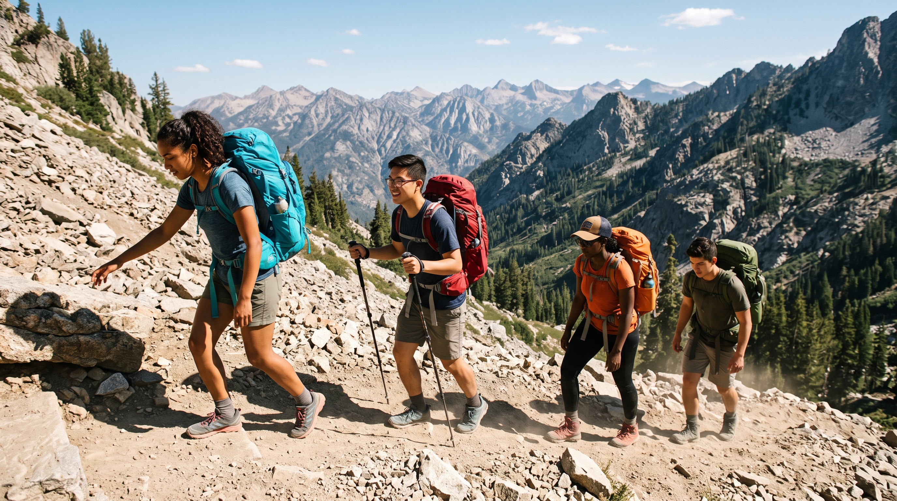
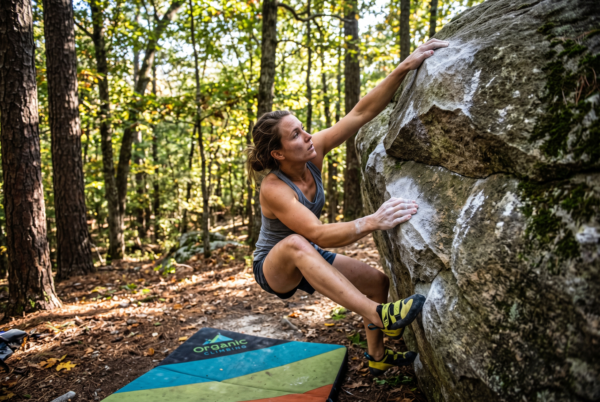

SPCA Dog Hike
Location: Piney Lake
Category: Local Day Trip
Partner with the local SPCA to take shelter dogs on a refreshing hike around Piney Lake.
View DetailsDitch the Dorm. Find Adventure.
From whitewater rafting to backcountry backpacking, join UNCG Outdoor Adventures to challenge yourself and experience the wilderness.
View Upcoming Trips
Location: Piney Lake
Category: Local Day Trip
Partner with the local SPCA to take shelter dogs on a refreshing hike around Piney Lake.
View Details
Location: Belews Lake
Category: Watersports
Navigate the calm waters of Belews Lake under the stars.
View Details
Location: Western NC
Category: Multi-Day Expedition
Spend your fall break exploring the most iconic hidden waterfalls across Western North Carolina.
View Details
Location: Pilot Mountain
Category: Rock Climbing
Challenge yourself on the classic top-rope routes at Pilot Mountain.
View Details
Location: Moore's Wall, NC
Category: Rock Climbing
Learn spotting techniques and outdoor bouldering fundamentals at Moore's Wall.
View DetailsOur program is designed to provide students with safe, educational, and exciting outdoor experiences. We handle the logistics and gear so you can focus on the adventure.